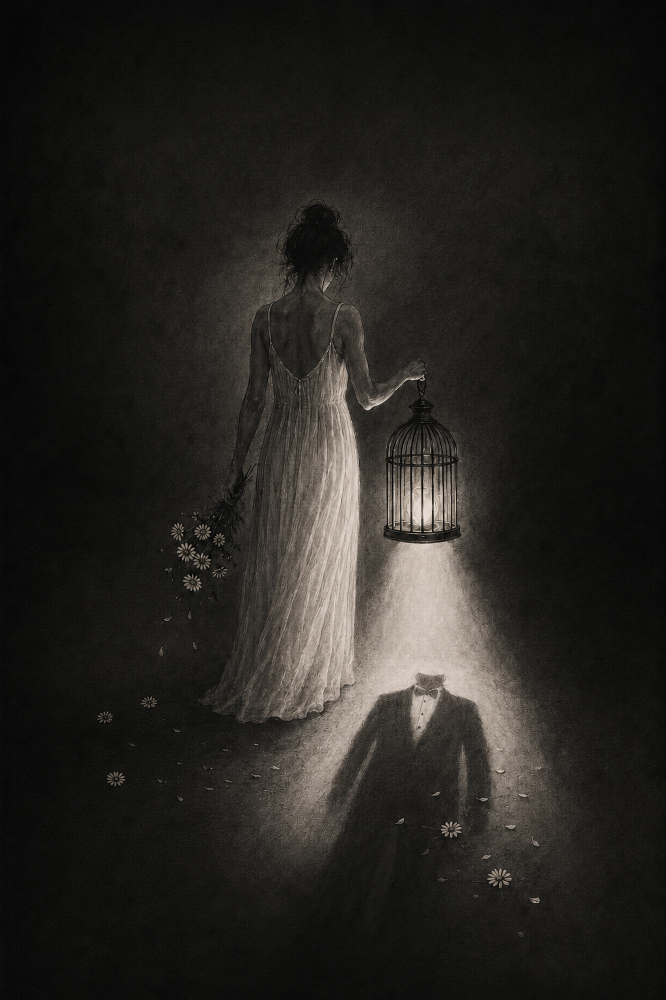

"Beni yüzyıllar boyunca zayıf, histerik, sadece bir erkeğin aşkı için aklını yitiren veya onun için yok olan trajik bir gölge gibi anlattılar. Nehrin sularına kendimi bırakırken ya da tanrılara kurban edilirken, çaresizliğimi asaletim sandılar. Oysa ben zayıf değildim; sadece kendi sesimi duyurabileceğim, nefes alabileceğim adil bir dünya bırakmadılar bana. Erkeklerin yazdığı o büyük metinlerin satır aralarında, itaat etmeyi reddeden öfkeli sesim sonsuza dek yankılanacak.”
"Gece eve dönerken adımlarımı saymaktan, gölgelerden korkmaktan yoruldum. Anahtarlarımı parmaklarımın arasına bir silah gibi sıkıştırmak, sadece var olduğum için sürekli tetikte olmak... Dünyanın yarısını oluşturan bizler, neden kendi mahallemizde, kendi sokaklarımızda birer mülteci gibi yaşıyoruz? Her ıssız sokakta hissettiğim o ensedeki soğuk nefes, aslında bana sınırımı ve 'yerimi' hatırlatan bu hastalıklı düzenin ta kendisi."
"Toplantı masasında kurduğum bir cümlenin duymazdan gelinip, beş dakika sonra yanımda oturan erkek meslektaşım tarafından tekrarlandığında 'dahiyane bir fikir' olarak alkışlanmasını izliyorum yıllardır. Sesimin, uzmanlığımın, emeğimin sırf bir kadın bedeni içinde olduğu için filtrelerden geçirilip küçümsenmesi o kadar ağır ki. Görünmez cam tavanlara çarpa çarpa başım kanıyor ama benden beklenen tek şey, o kanı silip onlara itaatkar, kibar bir tebessüm sunmam."
"Evin tüm duvarları benim görünmez emeğimle ayakta duruyor ama kimse beni görmüyor. Sabahın ilk ışıklarından gecenin körüne kadar herkesin hayatını organize eden, doyuran, temizleyen, toparlayan benim. Fakat 'Ne iş yapıyorsun?' dediklerinde başımı eğip 'Hiç, ev hanımıyım' demem bekleniyor. Kendimi, kocamın ve çocuklarımın hayatlarına giden yolda üzerine basılan, sessiz ve nefessiz bir köprü gibi hissediyorum."
"Sahnede, perdede ya da bir metnin içinde bile bana biçilen rol hep birinin 'kurbanı', 'pasif sevgilisi' veya 'çilekeş annesinden' ibaret. Kendi hikayemin aktif ve eylemde bulunan kahramanı olmama nadiren izin veriliyor; acı çekmem, estetik bir hüzünle delirmem veya erkeğin büyüklüğünü yansıtan bir ayna olmam isteniyor. Bedenim, duygularım, yaratıcılığım bile onların zihnindeki o sığ fantezilere sığdırılmaya çalışıldıkça, içimdeki ses boğuluyor."
"Kızımın saçlarını örerken ona dünyayı fethedebileceğini, hiçbir şeyden korkmaması gerektiğini fısıldıyorum. Ama içten içe biliyorum ki onu vahşi bir ormana, kuralları avcılar tarafından yazılmış acımasız bir dünyaya hazırlıyorum. Kendi boyun eğdiğim, 'düzen bozulmasın' diye sessiz kaldığım anların kefaretini kızımın özgürlüğünde ödemek istiyorum. Onun, benim ve benden önceki tüm kadınların sustuğu her şey için dünyayı sarsacak bir çığlık olmasını umut ediyorum."
"Okuduğum onca kitaba, yazdığım onca teze ve verdiğim onca emeğe rağmen hala o 'yetersizlik' hissini içime zerk etmeyi başarıyorlar. Kürsüde konuşurken, bana alanında uzman bir meslektaş değil de her an hata yapıp düzeltilmeyi bekleyen bir 'kız çocuğu' gibi bakmalarından iğreniyorum. Zekamı ve akademik bilgimi, erkeğin egosunu incitmeyecek, tehditkar görünmeyecek bir ambalaj içinde sunmak zorunda kalmak, aklın bile cinsiyetlendirildiği bu düzende en büyük işkence."
"Makinelerin gürültüsü içinde geçen on saatlik vardiyam bittiğinde dinlenebileceğimi sanıyorsunuz, değil mi? Hayır, eve adım attığım an asıl yorucu olan ikinci vardiyam başlıyor. Aynı üretim bandında omuz omuza çalıştığım, aynı fiziksel yorgunluğu çektiğim kocam evde çayını beklerken, ben mutfakta, çamaşırda, ütüde tükeniyorum. Emeğimin fabrikada patron tarafından, evde ise eşim tarafından sömürüldüğü dipsiz bir kuyunun içindeyim."
"Her gün bir kız kardeşimizin daha ismini sosyal medyada bir hashtag, haber bültenlerinde bir sayı olarak görmekten kalbim nasır tuttu. Bizler, öldürülmemek için, sadece insan gibi nefes alabilmek için meydanlarda bağırmak, yasa tasarılarını takip etmek, adliye koridorlarında nöbet tutmak zorundayız. Biz yaşamak istiyoruz, onlar ise bizi istatistiklere çevirmek istiyor. Yasımı tutmaya bile fırsat bulamadan, öfkemi kuşanıp yeniden yollara düşmekten hem çok yorgun hem de çok kararlıyım."
"Büyümeye başladığımı, çocukluktan çıktığımı ilk, akrabaların veya sokaktaki adamların bakışları değiştiğinde anladım. Bedenim benim olmaktan çıkıp, örtülmesi, saklanması, üzerine laf edilmesi gereken kamusal bir meseleye dönüştü aniden. Kahkahamın sesini kısmam, oturuşuma dikkat etmem, kiminle konuştuğumu hesap etmem söylendi durdu. Dünyanın özgürce keşfedilecek bir yer değil, mayınlarla dolu bir cezaevi olduğunu çok erken yaşta, zorla öğrendim."
“Bana hep nasıl oturmam, nasıl gülmem, nasıl konuşmam gerektiği öğretildi. Sanki doğduğum gün boynuma görünmez bir kılavuz asılmıştı. Erkek kardeşim hata yaptığında 'erkektir' dediler, ben en küçük yanlışımda ailemin onurunu taşıyan biri oldum. Bazen aynaya bakıyorum ve kendime şu soruyu soruyorum: Ben gerçekten kimim? Yoksa yıllardır başkalarının uygun gördüğü kadın rolünü mü oynuyorum? En çok da yorulduğum şey, sürekli kendimi ispat etmek zorunda kalmak.”
“Gece yürürken anahtarlarımı avucumun içinde sıkıyorum. Telefonumun şarjı bitmesin diye dua ediyorum. Eve vardığımda 'rahatladım' dediğim tek yer yine kendi evim oluyor. Bu korkunun bana ait olmadığını biliyorum. Ben doğuştan korkak değildim. Bana korkmayı öğrettiler. Sokakların, otobüslerin, karanlığın ve bazen gündüzün bile bana ait olmadığını hissettirdiler.”
“Çalışıyorum, kazanıyorum, yönetiyorum ama toplantıda söylediğim fikri kimse duymuyor. Beş dakika sonra aynı cümleyi bir erkek kurunca herkes alkışlıyor. Yorucu olan sadece emek vermek değil; görünmez olmak. Bazen başarımdan çok ses tonum değerlendiriliyor. Güçlü olursam 'sert', sessiz kalırsam 'yetersiz' oluyorum. Bu oyunun kurallarını ben yazmadım ama her gün içinde yaşamaya mecburum.”
“Anne olmam bekleniyor, iyi bir eş olmam bekleniyor, iyi bir çalışan olmam bekleniyor. Her role yetişmeye çalışırken kendime ait olan tek bir rol bulamıyorum. Yorulduğumu söylediğimde 'kadınlar her şeyi başarır' diyorlar. Belki de bazen güçlü olmak istemiyorum. Bazen sadece dinlenmek, anlaşılmak ve yükü paylaşmak istiyorum.”
“Kıyafetimin boyu hakkında herkesin fikri var. Kahkahamın yüksekliği hakkında herkes konuşabiliyor. Ama hayallerimi soran pek çıkmıyor. İnsanların gözünde önce bedenim var, sonra davranışlarım, en son belki düşüncelerim. Bir gün sadece söylediklerimle değerlendirileceğim bir dünyayı hayal ediyorum. Belki o zaman gerçekten görünmüş hissederim.”
“Çocukken 'erkek gibi cesur' dediler. Büyüyünce 'kadın gibi davran' demeye başladılar. Aynı insanlar hem cesur olmamı hem de itaat etmemi bekledi. Çelişkiler içinde büyüdüm. Kendi sesimi bulmam yıllar sürdü. Şimdi biliyorum ki cesaretin cinsiyeti yokmuş; sadece bazı insanların bundan korkusu varmış.”
“Şiddet yalnızca yumruk değilmiş. Bunu çok geç öğrendim. Sürekli küçümsenmek, kararlarının yok sayılması, arkadaşlarından uzaklaştırılmak, ne giyeceğine başkasının karar vermesi... Bunların hepsi insanın ruhunda iz bırakıyormuş. Aynaya baktığım gün 'ben artık kendim değilim' dediğim an, aslında en büyük yarayı o zaman aldığımı fark ettim.”
“Ben kız çocuğuyken 'sus' denildi. Genç kadın olduğumda 'idare et' denildi. Anne olduğumda 'çocuklar için katlan' denildi. Hayatım boyunca hep sessizlik öğütlendi. Oysa konuşmaya başladığım gün anladım ki sesim sadece bana ait değilmiş. Ben konuştukça benim gibi susmuş başka kadınlar da cesaret buluyormuş.”
“Bazen düşünüyorum; erkek olsaydım hayatım ne kadar farklı olurdu? Aynı zekâyla doğacak, aynı emeği verecektim ama belki daha az açıklama yapmak zorunda kalacaktım. Belki eve geç kaldığım için hesap vermeyecektim. Belki başarım 'şaşırtıcı' bulunmayacaktı. Hayalim erkek olmak değil; kadın olduğum için daha az özgür hissetmediğim bir dünyada yaşamak.”
“Ben erkeklerden nefret ederek yaşamak istemiyorum. Ben korkmadan yürümek, fikrimi söylerken küçümsenmemek, sevdiğim işi yapabilmek, hayır dediğimde bunun yeterli olması ve yalnızca insan olduğum için saygı görmek istiyorum. Belki bütün mücadelem bunun için: Bir gün kız çocuklarının özgürlük kelimesini sözlükten değil, hayatlarından öğrenebilmesi için.”
“Ben kaybetmedim, ben verdim. En azından uzun yıllar kendime bunu söyledim. Önce arkadaşlarımdan vazgeçtim, sonra hayallerimden. Sevdiği şehirde yaşamak için kendi şehrimi bıraktım. Sevdiği yemekleri öğrendim, sevmediği renkleri giymedim. Ben değiştikçe 'biz' büyüyor sanıyordum. Meğer büyüyen sadece onun hayatıymış. Bir gün eski fotoğraflarıma baktım. Gülümsüyordum ama o kadını tanıyamadım. Çünkü ben, onu mutlu etmeye çalışırken yavaş yavaş kendimi unutmuşum. Yine de pişman değilim diyemem ama onu sevdiğim kadar bir gün kendimi de sevebilseydim, belki bugün elimde sadece hatıralar değil, biraz da ben kalırdı.”
“Onun konuşmasını dinlediğim ilk günü hatırlıyorum. Sanki herkes susmuş, yalnızca o gerçeği biliyormuş gibiydi. Bilgisine, cesaretine, kararlılığına hayran kaldım. Ardından gittiğim her yerde onu biraz daha tanımaya çalıştım. Onun dünyasına girebilmek bana kendi dünyamı unutturdu. Fikirleri benim fikirlerim oldu, kararları benim kararlarım gibi geldi. İnsan bazen birini o kadar büyütüyor ki kendi gölgesini göremez oluyor. Şimdi dönüp bakınca fark ediyorum; ben onun yanında yürüdüğümü sanıyordum ama aslında hep birkaç adım arkasındaydım. Kendimi onun gözlerinden görmeye çalışırken, kendi gözlerimle bakmayı unutmuşum.”
“O beni benden daha iyi tanıyor. Ne zaman üzülsem nedenini benden önce o söylüyor. Bazen yanlış hatırladığımı söylüyor, ben de gerçekten öyle olduğuna inanıyorum. Arkadaşlarımın bana iyi gelmediğini düşündüğü için onlarla daha az görüşüyorum; sonuçta beni en çok o düşünüyor. Kıyafetlerime karışması da aslında beni korumak istemesinden. Telefonumu merak etmesi sevgisinden. Ben onsuz karar vermekte zorlanıyorum çünkü onun aklına güveniyorum. İnsan sevdiği kişiyi üzmek istemez ki... O yüzden bazen içimden başka bir şey geçse bile onun dediğini yapıyorum. Galiba aşk dediğin biraz da böyle bir şey; kendinden vazgeçmeden, ama onun istediği gibi yaşayabilmek. Hem beni bu kadar seven biri bana neden zarar vermek istesin ki?”
"Sabahın beşinde kalkıp çocuğumu hazırlarken, bir yandan da iş yerinden gelen acil e-postaları yanıtlıyorum. Ofiste proje sunumunu yaparken, erkek meslektaşım aynı fikri beş dakika sonra söylediğinde 'çok isabetli' diye alkışlanıyor. Akşam eve geldiğimde, annem 'Kadının evi karnıyla doyurması yetmez mi?' diye sitem ediyor. En yorucu kısmı fiziksel yorgunluk değil; sürekli bir şeyleri kanıtlama zorunluluğu. Sanki her an sergilediğim performans, tüm kadınların bu arenadaki notu olarak değerlendiriliyor. Ben sadece bir restoratörüm, bir annem, bir eşim; ama bu düzen bana sürekli olarak, önce bu kimliklerin hepsini sorgulatıp sonra da hepsinde kusursuz olmamı dayatıyor."
"Bugün kampüste, okulun en prestijli kulübünün başkanlık seçimlerinde aday olduğum için arkamdan fısıldaşanları duydum. 'Kız başkan mı olurmuş?', 'Zaten bir ay sonra ailesi evlendirir, ne yapacak?' diyorlar. Ama en çok canımı yakan, sırf erkek olduğu için hiçbir vasfı olmayan rakibimin, hocalar tarafından daha 'ciddi' bulunması. Sokakta yürürken kulaklığımı takıp, göz teması kurmamaya çalışıyorum, çünkü bakışlarım 'davet' olarak yorumlanıyor. Bedenim sürekli bir tartışma konusu: ne çok açık, ne çok kapalı; ne çok iddialı, ne çok utangaç. Ben sadece okuyup, hayal kurup, özgürce yürümek istiyorum; ama bu düzen beni daha yirmi yaşında hem güvenliğim hem de potansiyelim için endişelenmeye zorluyor."
"Köydeki fabrikada on dört saat çalışıyorum, ama maaşım yanımdaki adamın üçte biri kadar. Eve gelince kocamın ve kayınpederimin yemeğini pişiriyorum; çünkü 'evin direği erkektir' derler. Oysa direk benim; çünkü ben yıkılmıyorum. Kızımın okula gitmesine izin vermediler, 'Kız çocuğu çeyizle gider, kitapla değil' dediler. Şimdi o da benimle aynı fabrikada çalışıyor. Onun gözlerindeki o sönmüş ışığı gördükçe içim parçalanıyor. Hayatım boyunca bana 'hayır' denilerek büyütüldüm; 'Hayır, yapamazsın', 'Hayır, otur', 'Hayır, sus'. Ama şu an bu cümleleri yazarken bile, içimdeki o 'hayır'lara başkaldıran küçük kız çığlık atıyor. Bizi sadece çalışan bedenler değil, aynı zamanda hayalleri olan ruhlar olarak da görün artık."
"Tıp fakültesinde birincilikle mezun oldum; ama uzmanlık alanımı seçerken, 'Kadın cerrah olmaz, çok ağır gelir, eli titrer' dediler. Şimdi ameliyathanede en zor vakaları ben alıyorum, ama hastalar gelip 'Doktor bey' diye erkek asistanımı arıyor. Toplantılarda sözüm kesildiğinde sesimi yükseltmek zorunda kalıyorum; o zaman da 'çok agresif' olarak etiketleniyorum. Meslektaşlarım maç sohbeti yaparken, benim bir gün izin alıp hastalanan anneme bakmam gerektiğini anlatmalarına bile tahammül edemiyorlar. Tüm bu zorlukların arasında en büyük kavgam, hastalarımın hayatlarını kurtarmak değil aslında; bir kadının sadece elleriyle değil, aynı zamanda aklıyla da dünyayı değiştirebileceğini kabul ettirmek."
"Benim bedenim siyahi, benim bedenim kadın, benim bedenim 'öteki'. Ataerkillik sadece erkeklerden gelmiyor; bazen kendi toplumumdaki yaşlı kadınlar bile 'Kadının sesi gür çıkmaz, otur' diyor. Beyaz feministlerin 'cam tavan' dediği şey, burada beton bir duvar; hem ırkımdan hem cinsiyetimden dolayı. Sanatımla bu duvarı boyuyorum; tuvallerime kanayan adetimi, doğum sancımı, korkumu ve öfkeyi çiziyorum. Ama sokakta tek başıma yürürken, 'Sen sanatçı mısın, fahişe misin?' diye söylenen ıslıklarla düşlerim paramparça oluyor. Bu düzen, siyahi bir kadının sanatını değil, sadece tenini ve bedenini görmek istiyor. Ben ise önce var olduğumu, sonra sanatçı olduğumu ve en sonunda özgür olduğumu bağırana kadar çizeceğim."
"Evim, şehrin dört bir yanı gibi bombalarla yerle bir oldu. Ama enkaz altından kurtulduğumda, komşularımızın ilk sorusu 'Kızın namusu ne oldu?' oldu. Oysa biz ölüyorduk; ama siz hala bir kadının 'namus'unu korumakla meşguldünüz. Şimdi bir mülteci kampında çocuklara ders veriyorum, ama kendi kızımı sokağa salmaya korkuyorum. Çünkü bu sistem, bir savaşın tam ortasında bile kadını düşman olarak görüyor; önce bombalardan, sonra da toplumun yargılarından kaçmak zorunda kalıyoruz. Ben hayatta kaldım, çünkü kızıma 'yalnız değilsin' demek zorundayım. Savaş erkeklerin başlattığı bir oyun; ama kadınlar bu oyunun hem en büyük kaybedeni, hem de yeniden inşanın tek umudu."
"Gençliğimde Franco döneminde büyüdüm; kadınlar kocalarının izni olmadan banka hesabı bile açamazdı. Onlarca yıl boyunca, öğretmen olduğum için 'kocasına rağmen' çalışan kadın damgası yedim. Şimdi torunum bana 'Neden hiç kendi ayaklarının üzerinde durmadın?' diye soruyor. O an anlıyorum ki, kazandığımız her hak, her kuşakta yeniden sorgulanıyor. Bugün genç kızların iş yerinde tacize uğradığını, sokakta darbedildiğini duydukça, 80'li yıllarda sokaklarda 'Özgürlük' diye bağırdığım günler tekrar geliyor aklıma. Bu düzenin değiştiğini sanıyorduk; sadece kılık değiştirip farklı bir zorbalıkla geri döndü. En acısı, bu mücadeleyi kızıma ve torunuma miras bırakmak zorunda olmak; oysa ben onlara sadece huzurlu bir dünya bırakmak istiyordum."
"Bir teknoloji şirketinde CTO'yum; ama yatırımcılara sunum yaparken, 'Bu işi kocan mı yönetiyor?' sorusuyla karşılaşıyorum. Çalışanlarım arasında kadın mühendislerin sayısı arttıkça, ofiste 'Feminist tayfa' diye anılıyoruz. Geçen hafta bir yatırımcı, 'Hamile kalırsan şirketi ne yapacaksın?' diye sordu. Hiçbir erkeğe böyle bir soru sorulmazken, benim üreme seçimlerim, şirketimin değerlemesine konu oluyor. Bu sistem, kadının üretkenliğini rahmiyle ilişkilendirirken, erkeğin başarısını zekasıyla açıklıyor. En büyük motivasyonum, kız çocuklarına 'Bir kadının en büyük sermayesi beynidir' diyebilmek. Ama bunu söylerken bile, cinsiyetim yüzünden iki katı çalışmak zorunda olduğumu hissetmek çok yorucu."
"Ben hem Romanım hem kadınım. Bu toplumda iki kez yabancıyım. Devlet dairelerinde soyadıma bakıp kapıyı yüzüme kapatıyorlar. Polis, eşim beni dövdüğünde 'Sizin mahallede bu işler normaldir' diyerek olayı kapatıyor. Kendi toplumumda ise 'Kadının sözü erkeğin sözünün yarısıdır' diye ezberletiliyoruz. Ama ben bu 'normal' kelimesini hayatımdan sildim. Bir kadının dövülmesi, bir kız çocuğunun okutulmaması, bir bebeğin aç kalması asla normal değil. Mücadelemi anlatırken çoğu feministten daha sert seslenmek zorunda kalıyorum; çünkü ben sadece kadın hakları için değil, etnik kimliğimle var olma savaşı veriyorum. Bu çifte yük, sırtımda iki katlı bir dağ gibi; ama ben bu dağı devirecek kadınım."
"Koto çalıyorum; bu enstrüman bin yıldır kadınların zarafetini temsil eder. Ama sahneye çıktığımda, önce kimononun düzgün duruşuma bakılıyor, sonra tekniğime. Müzik eleştirmenleri, 'Bir kadından beklenen duygusallığı veriyor' yazıyor; oysa erkek meslektaşım aynı parçayı çaldığında 'ustalık' deniyor. Ailem benden bir koca bulmamı, sanatımı ise 'hobi' olarak görmemi bekliyor. Ama ben bu tellerin her bir titremesinde, asırlardır kadınların susturulmuş feryadını duyuyorum. Geleneği korumak zorundayım; ama aynı zamanda bu geleneğin beni hapseden yanlarını kırmak zorundayım. Sessiz, sakin ve kusursuz bir Japon kadını olmam beklenirken, ben enstrümanım aracılığıyla haykırıyorum: Ben bir sanatçıyım, bir bireyim, bir kadının sadece bir gölge olmadığı bir dünya hayal ediyorum."
"Onunla tanıştığımda kendi atölyemi açmış, Paris'te sergilenmiş, hayalleri olan bir kadındım. Ama o geldiğinde, onun hayalleri daha büyük, daha parlak göründü. 'Sen olmadan yapamam,' dedi, 'Senin yaratıcılığına ihtiyacım var.' Önce birkaç projesinde gönüllü çalıştım, sonra tüm birikimimi onun yeni şirketine yatırdım. Annemin altınlarını bile sattım. Arkadaşlarım 'Neden hep sen veriyorsun, neden hep sen adım atıyorsun?' diyordu, ama ben onların kıskançlık yaptığını sanıyordum. Çünkü o bana, 'Biz bir bütünüz, benim başarım senin başarın' derdi ve bu sözler kalbimi ısıtırdı. Atölyemi kapattım, çünkü 'Onun yanında olmalıydım.' Projelerimi yarıda bıraktım, çünkü 'Onun projeleri daha acildi.' Ve gün geldi, kendi ismimi bile unuttum; artık sadece 'Onun yanındaki kadın'dım. Bugün aynaya baktığımda, hayallerini sattığımı değil; sevdiğim için her şeyi göze alan cesur bir kadın görüyorum. Gözyaşlarımı siliyorum ve hala onu seviyorum; çünkü sevmek fedakarlıktır, değil mi? Ama bazen gecenin sessizliğinde, 'Ya tüm bunlar boşunaydı?' diye fısıldayan iç sesimi susturmak için sabahı bekliyorum."
"Üniversitenin son sınıfında, siyaset bilimi derslerine girdiğinde büyülenmiştim. Öylesine etkileyici konuşuyordu ki, her cümlesi bir manifesto gibiydi. Onun için 'Bu ülkeyi değiştirecek adam' diyorlardı, ben de buna inandım. Mezun olunca teklifimi yaptı: 'Size asistanlık yapabilir miyim, sizinle çalışmak istiyorum.' Kabul etti. O gün bugündür, onun yazdığı makaleleri ben düzenliyorum, onun adına konuşma metinleri hazırlıyorum, hatta onun fikirleri benim fikirlerim oldu. Ama adım hiçbir yerde geçmiyor. Basın toplantılarında arka planda oturuyorum, projelerimizi anlatırken o konuşuyor. Annem 'Kendi kariyerin ne oldu?' diye sorduğunda, 'Ben zaten onun kariyerinin bir parçasıyım' diye cevap veriyorum. Çünkü o bana 'Sen özelsin, sen olmadan hiçbir şey yapamam' dediğinde, tüm dünya yerli yerine oturuyor. Belki de ben kendi ışığımı söndürdüm, ama onun ışığı o kadar parlaktı ki, gölgesinde olmak bile beni mutlu ediyordu. Şimdi ise, otuz üç yaşında, başkalarının hayatlarını yazarken kendi hikayemi kaybettiğimi fark ettim; ama ona hayran olmaktan vazgeçemiyorum, çünkü o hala benim kahramanım."
"Ahmet'imle evleneli on beş yıl oldu. Dünyanın en iyi eşine sahibim. O kadar ilgili ki, her hareketimi, her kıyafetimi, her telefon görüşmemi kontrol eder; çünkü beni çok kıskanır, çok sever. Dışarı çıktığımda bir saat geç kalsam, telaşlanır, 'Başına bir şey gelecekti, korktum' diyerek ağlar. İşte bu yüzden arkadaşlarımla görüşmeyi bıraktım; onu üzmek istemem. Onun stresli bir işi var, ailesine ben bakıyorum; bazen o kadar yoruluyorum ki, geceleri yatakta ağladığımı bile unutuyorum. Ama o 'Sen olmazsan ben mahvolurum' dediğinde, tüm yorgunluk geçiyor. Geçen gün komşum 'Kızım, bu kadar kısıtlanma normal değil' dedi. Ona kızdım. Çünkü kimse bizim aşkımızı anlamaz. Ahmet beni koruyor, kolluyor, her şeyimi kontrol ediyor; çünkü o olmasa, ben ne yaparım ki? Ben onun dünyasının merkezindeyim. Bazen aynada saçlarımın ağardığını, gözlerimin altının morardığını görüyorum. Ama önemli değil; o bana hala 'Prensesim' diyor. Ben çok mutluyum. Değil mi? Ben mutluyum... Değil mi?"